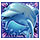

5-Reel 20-line Slots
The objective of Dolphin Reef is to obtain winning symbol combinations by spinning the reels.
To play the game:
- A wagering denomination (coin value) can be chosen by clicking the Click to Change denomination button in the lower left-hand corner of the screen.
- Line bets are chosen by clicking Bet per Line. Each click adds a coin to the line bet. When the maximum amount is reached (10 coins of the selected wagering denomination), clicking the button again resets the line bet to one coin.
- Paylines are chosen by clicking Lines. Each click activates a payline. When all paylines are activated, clicking the button again resets it to one active payline. Paylines can also be activated by using the numbered buttons on either side of the reels. Selecting a high payline includes all the lower ones too. For example, selecting payline 6 also activates paylines 1 through 5. Clicking Bet Max activates all paylines with the currently selected bet per line and spins the reels.
- Total bet per game round = line bet X active paylines.
- Clicking Spin spins the reels with the current selection of lines and line bets. During the reel spin the Spin button changes intoStop. Clicking Stop ends the spin animation and immediately displays the spin result.
- Reels can also be spun using the Auto Start function. Clicking + or – above Auto Start selects the successive number of spins to be enabled. Clicking Auto Start spins the reels. The Auto Start button changes into Stop during the Auto Start mode. The Auto Start mode ends when the reels have been spun the number of times determined by the player, or when the player clicksStop.
- Wins are calculated according to the paytable. Line win = line bet X corresponding multiplier according to the paytable. Scatter win = total bet X corresponding multiplier according to the paytable. The paytable can be accessed via the Info page.
- On a given payline, only the highest payline winning combination pays while simultaneous winnings on different paylines are accumulated.
- In case of a winning spin, the Win field displays the accumulated winnings.
- Payline wins and the total win are also displayed on the strip located at the bottom of the reels or the game window.
- A win activates the Gamble button which, when clicked, starts the Gamble feature. More information about the Gamble feature can be found below.
Info page:
- Clicking Info opens the reference screen describing different game components. Clicking the arrow buttons at the lower right-hand corner of the screen enables navigating between the different info screens.
- The Paytable screen shows all winning combinations.
- The Free Games screen describes the symbol combinations necessary to trigger the Free Games feature and describes the Free Games feature rules.
- The Gamble screen describes how to try doubling winnings by gambling with them and describes the doubling-up rules.
- Clicking Show Paylines on the Paytable page, opens a screen that illustrates all possible payline combinations. Clicking Hide Paylines closes this screen and returns to the Paytable page.
- Clicking Back exits the Info screen and returns to the game.
Paylines:
- Active paylines are represented by lines that appear over the reels. Paylines can be activated and their shape displayed by progressively clicking the Lines arrow buttons. Only active paylines can register wins.
- There is a difference between the line bet and the total bet. The line bet shows how much is being bet on a single payline. The total bet shows how much is being bet in total on the game round. Payouts shown in the paytable are multiplied by the line bet.
The Scatter symbol is an exception to these rules. More information about the Scatter symbol can be found below.
About payouts:
- If a symbol has a winning combination on more than one reel, the winnings are added up.
- Winning combinations must start from the leftmost reel, and the symbols have to be on consecutive reels.
- If two payline winning combinations occur on the same line, the higher of them is paid out. If more than one active payline has a winning combination, the winnings are accumulated.
The Scatter symbol is an exception to these rules. More information about the Scatter symbol can be found below.
Wild Symbol
The Wild symbol in the game is the  symbol. It appears on reels 2 and 4 and can stand for any other symbol to make the best possible winning combination.
Scatter Symbol
The Scatter symbol in the game is the  symbol. It does not have to occur on a particular payline – if there are three or more Scatters in the spin results, an additional win is earned and added to payline winnings. The payout for the Scatter symbols is multiplied by the total bet.
symbol. It does not have to occur on a particular payline – if there are three or more Scatters in the spin results, an additional win is earned and added to payline winnings. The payout for the Scatter symbols is multiplied by the total bet.
Free Games
When the symbols appear anywhere on the second and fourth reels simultaneously, the player is awarded 5 Free Games.
During the Free Games, the second and fourth reels expand into Wild reels. Like regular Wild symbols, the expanded Wilds also substitute for all symbols. All positions on the expanded reels 2 and 4 substitute for all symbols, including . The entire expanded reel is treated as the symbol that is substituted along an active payline.
During the Free Games, reels 1, 3 and 5 are respun 5 times. The Free Games are played at the line bet, coin size and number of lines of the spin that triggered the Free Games. The Free Games wins are added to the win from the triggering spin, and the Scatter wins. Note that it is not possible to win additional Free Games during the Free Games round, as the reels 2 and 4 are already Wild.
After all Free Games have been completed, a result board summarizes the winnings. Game Win shows the winnings that were received from the main game spin that won the Free Games. Feature Win shows the winnings that were received during the Free Games. Total Win shows the accumulated winnings (Game Win and Feature Win added up).
Clicking Continue will return you to the main game.
Gamble
A win activates the Gamble button which, when clicked, starts the Gamble feature where you can bet the winnings from your last spin to try and increase them.
Your current winnings are shown in the Bank field. You can choose to bet these winnings to double them by clicking Red or Blackbutton. Double To shows the amount that will be placed in the Bank, if you win.
If you do not want to bet, you can click Collect to add the winnings from the last spin to your balance and return to the main game. If you choose to bet, you have to guess whether the next card that is going to be revealed is red or black. If your guess is correct, you win. If your guess is wrong, you lose your bet and the Gamble feature ends.
With every win, you can bet again until the winnings in the Bank are equal to or greater than the Gamble feature limit. The limit is shown on the Info page that describes the Gamble feature.
Click Collect to add your winnings from the Bank to your balance and return to the main game.
Please note: The Gamble button is disabled during Free Games and while the Auto Start is active.
Return to Player
The theoretical percentage return to player (RTP) is 95.23%.